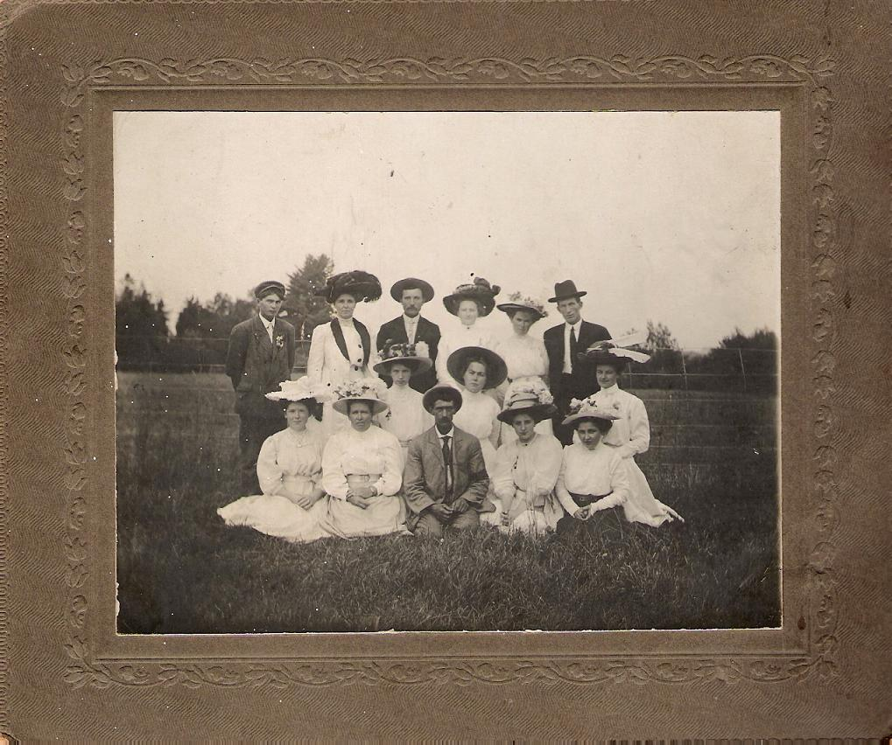

The Family Chronicle
No. 181 January 31, 2010 ___________________________________________________________________

Thanks to Barbara (MacColl) Somers for the above.
photo of St. Stephen’s Choir from the Bessie Edge's collection. Barry Mackenzie and Everard MacLean
were able to identify a few faces and think that the back row includes Mamie McKay and John E. MacLean; Middle Row includes Nellie McKay and Katie (Watling) MacLean; Front Row includes Ruby MacLean and Emily (Watling) MacDougall
Mrs. Joseph Kelly
The Commercial of September 16, 1943 carried the following:
“The death occurred at her home in Black River about noon on Monday of Mrs. Joseph Kelly, one of the oldest and most highly esteemed residents of this district, aged 89 years. She was formerly Sarah MacLean and was born in Black River where she lived her entire life.
She is survived by three sons, Capt. Hugh R of the Department of Fisheries Patrol Boat “ Gulf Ranger”, William of Medford, Mass., and Germaine at home, two daughters, Mrs. William Pike of New York, and Mrs. Philip Dwyer of Athol, Mass. Also surviving are one brother, Duncan MacLean of Berlin Falls, Maine, twelve grandchildren and 9 great grandchildren.
The funeral is being held this afternoon at 2:30 o’clock. Service at the house at 2:00 o’clock will be conducted by Rev. Peter Jackson of St. Stephen’s United Church, Black River and interment will be made at St. Stephen’s Cemetery”
Mrs. Andrew Mills
The Commercial of September 9, 1943 carried the following:
“The death occurred on Tuesday evening at her home in Bay du Vin Beach of Mrs. Mary Mills, wife of Andrew Mills of that place.
The late Mrs. Mills is survived by her husband and two sons, Alexander, at home and Gordon, of Moncton who was at home at the time, and one brother, James W. Loggie of Wishart’s Point, NB.
Mrs. Mills was formerly Mary Loggie, daughter of the late Mr. and Mrs. James Loggie of Chatham
The funeral is being held this (Thursday) afternoon at 2 o’clock. Interment will be made in Black River Cemetery”
The Family Chronicle (Copyright) is an occasional newsletter published by Don Glendenning and posted on the family website. It is intended to share information about my family, community and the times in which I grew up. While every effort is made to be accurate, errors are likely to occur. Comments, enquiries and information may be sent to 62 Queen Elizabeth Drive, Charlottetown, PEI, C1A 3A9. Tel: 902 892 5859. Email: don@glendenning.net Web: www.glendenning.net/don
School Life in Middle Black River in April 1880
Thanks to Barry MacKenzie
Teachers: Thomas George McKay/Annie J. McLeod; both Class II.
Trustees: Hugh McDonald, Hugh Cameron, and James McDonald.
Total of teaching days in term (3rd Nov. 1879 to 30th April 1880): 114.
Grand total of days’ attendance by students: 1209.5.
On average, there were 10.79 students present during each day of teaching, or approximately forty-three percent of those enrolled. There were 50 children in the district between 5 and 15 years of age; 25 did not attend during this term.
There were seats for 45 students and the schoolroom measured 21’ X 31’. Three visits were made by trustees during the term, two by clergymen, three by teachers from other schools, and six by other visitors.
April Examinations in the following subjects: Reading, Writing, Spelling, Drawing, Grammar, Geography, Arithmetic, History, and Dictation.
Select pieces recited: “The Life Boat”; “The Cat Eater”; “Boy Talk”; “Bee, Clock, and Broom”; “Little Kindnesses”; “Welcome”; and “Give Me Three Grains of Corn.”
Trustees Return was signed by the Trustees and the teachers in the presence of John McRae, Justice of the Peace. It appears that it was Annie J. McLeod who finished out the term, as she taught for 80.5 of the 114 teaching days.
Roll of Students (with ages):
Cassie
Cameron 14
Carrie Cameron 12
John J. Cameron 9
Catherine
Cameron 10
Alexander S. Cameron 7
Donald C. McNaughton
10
Malcolm McNaughton 10
Donald McNaughton 7
Barbara
McNaughton 11
Murdoch Cameron 13
Duncan McDonald 13
Donald
McDonald 8
Margory McKay 9
Willie McDonald 9
John
McDonald 7
Nettie Ullock 9
Maggie A. Ullock 8
Lizzie
McDonald 10
Mary McDonald 12
Archibald Cameron 11
Robert
Alton 14
Lizzie Godfrey 13
Mary Godfrey 8
Annie
Ullock 6
Annie
McDonald 12
Follow
-up
You may remember that, some time ago, I mentioned asking permission in school to go to the toilet and using one or two fingers to indicate more precisely the nature of nature’s call. Regis Carroll sent a follow-up note to the effect that if paper was required it was given to the student as he or she left the building. (Young readers may not realize that there was no indoor plumbing in our schools in those days). Paper was not left in the toilet presumably because it would get soaked by rain or snow, might blow away or otherwise just disappears.